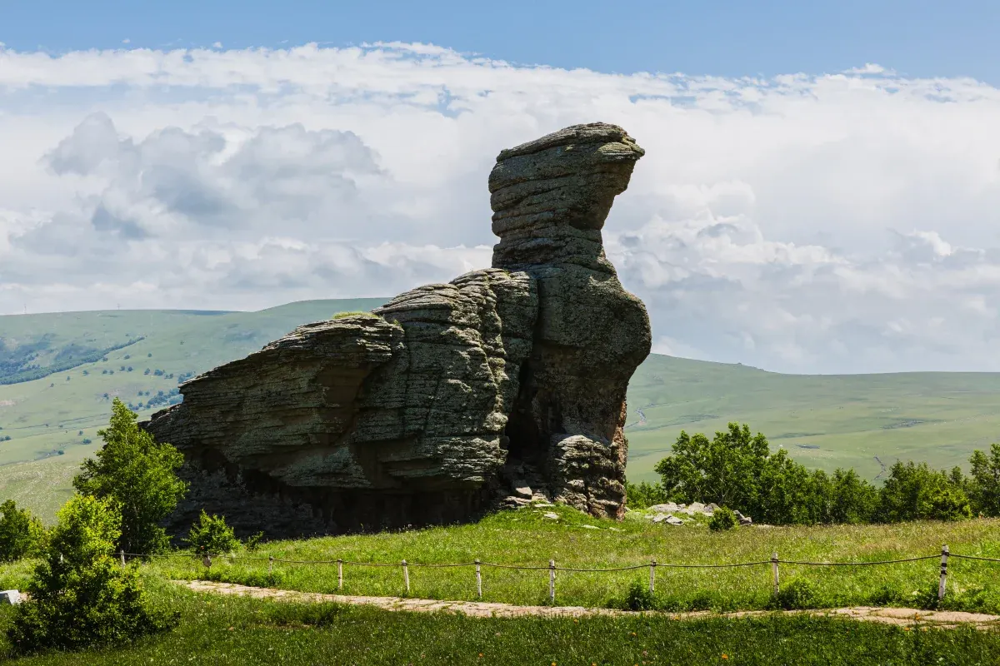

CITY 04 / 12 · CHIFENG
赤峰赤峰市 · 玉龙故乡
从红山文化的玉龙，到克什克腾的石林与达里湖，赤峰把史前与旷野放在同一张地图上。
9.0 万 km²面积
约 400 万常住人口
22 处必游点位
3 项非遗项目
玉龙故乡
CITY PORTRAIT
赤峰位于内蒙古东南部，是红山文化的命名地，也是辽代政治中心之一。它既有“中华第一龙”的史前回响，也有大兴安岭余脉、科尔沁沙地与达里诺尔湖的旷野。
对旅行者来说，赤峰的魅力在于跨度：上午还在博物馆看玉龙，下午就能站在阿斯哈图的花岗岩石林里；再往南，乌兰布统的草甸与影视基地又是另一种气质。
红山文化克什克腾辽文化
MUST SEE
必游景点
22 处点位，覆盖赤峰最值得走进去的自然与人文现场。点击任意一张卡片，展开完整讲解与研学提示。
LIVING HERITAGE
非遗图谱
从音乐、舞蹈到技艺与民俗。这里的每一项都不是“表演给游客看”的节目，而是仍在被传承的生活。
TASTE OF PLACE
在地风物
一座城的味道，往往比景点更接近日常。以下四样，是赤峰餐桌上最常见的坐标。
对夹
酥皮夹熏肉，赤峰人的早餐
哈达饼
薄如纸，甜咸皆宜
敖汉小米
世界旱作农业遗产地
宁城老窖
塞外酒乡的浓香
ONE DAY ROUTE
三日赤峰 · 从石林到沙湖
把上面的点位按时间排成一条线。不必严格照表，按你的节奏删减一站，也是一种走法。
D1 09:00
阿斯哈图石林
在克什克腾看花岗岩石林与冰川遗迹。
D1 16:00
达里诺尔湖
湖边等日落，秋季可观察候鸟。
D2 08:00
乌兰布统
晨雾中的白桦与泡子，下午骑马或徒步。
D3 10:00
玉龙沙湖
返程途中滑沙、看玉龙文化展。
路线提示 · 赤峰景点跨度大，克什克腾旗内部适合自驾环线；乌兰布统与玉龙沙湖分处西南、东南，建议至少安排三天。